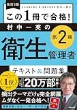

第二種衛生管理者のおすすめ参考書・テキスト3選【2026年度版・独学】
第二種衛生管理者試験は3分野（労働生理・労働衛生・関係法令）を押さえる必要があり、最初の1冊選びで学習効率が大きく変わります。本記事では2026年度版の主要テキスト&問題集3冊を、初学者・社会人独学の視点で比較します。価格・版情報は購入前にAmazonの販売ページで必ずご確認ください。
この記事の要点
独学で使う第二種衛生管理者のテキストを、解説の厚み・演習量・初学者向きの観点で比較し、自分の学習スタイルに合う1冊に絞りたい。
- 「2026年度版 スッキリわかる 第2種衛生管理者 テキスト&問題集」
- 「第2種衛生管理者 合格教本&問題集」
- 「改訂3版 この1冊で合格! 村中一英の第2種衛生管理者 テキスト&問題集」
- テキスト選びの基準
- 過去問との併用
この記事の信頼性について
| 執筆 | 二衛マスター編集部（資格学習サイトの編集チーム） |
|---|---|
| 確認 | 公式情報確認担当（公開前に一次情報との照合を行う担当者） |
| 事実確認日 | 2026-06-03 |
| 主な参照元 |
1テキスト選びの3つのポイント
- ①安全衛生技術試験協会（公式）の出題範囲3分野と目次が一致しているか
- ②解説量が自分の前提知識に合うか
- ③章末演習や別冊問題集とセットで使えるかを確認します
社会人独学では、通勤で読める分量と週末にまとめて演習できる問題量も判断材料になります。1冊に絞れない場合は、テキスト1冊＋過去問専門1冊の2冊構成も有効です。
おすすめテキスト3選（比較）
価格・在庫・版情報は執筆時点（2026-06-03）のAmazon税込参考です。購入前に必ず販売ページでご確認ください。
| 順位 | 商品名 | 価格（税込参考） | ページ数 | 向いている人 |
|---|---|---|---|---|
| 1 | 2026年度版 スッキリわかる 第2種衛生管理者 テキスト&問題集 | ¥1,650 | 448 | 初学者で図解と演習を1冊にまとめたい人 |
| 2 | 第2種衛生管理者 合格教本&問題集 | ¥1,650 | 496 | 解説の厚みと演習量のバランスを重視する人 |
| 3 | 改訂3版 この1冊で合格! 村中一英の第2種衛生管理者 テキスト&問題集 | ¥1,650 | 416 | 著者の解説トーンで暗記→演習を進めたい人 |

2026年度版 スッキリわかる 第2種衛生管理者 テキスト&問題集
- イラスト中心で3分野の全体像をつかみやすい
- 章末演習でテキストと問題の往復がしやすい
- TACブランドで第二種独学の定番として選ばれやすい

第2種衛生管理者 合格教本&問題集
- 教本パートで論点を丁寧に整理
- 問題集パートで演習量を確保しやすい
- 技術評論社シリーズで他資格教材との相性がよい

改訂3版 この1冊で合格! 村中一英の第2種衛生管理者 テキスト&問題集
- 村中一英氏の語り口で条文・数値を整理しやすい
- テキストと問題がセットで復習サイクルを組み立てやすい
- 改訂版で最新の出題傾向を反映
2おすすめテキスト比較の見方
比較では「図解で全体像を掴む」「解説を厚く読む」「著者の語り口で進める」の3タイプで見ます。いずれもテキストと演習がセットのALL-in-one型です。独学初期は理解用1冊に絞り、過去問演習が進んだ段階で問題集を追加する構成が扱いやすいです。二衛マスターの過去問で分野別得点を確認し、足りない解説量を基準に選んでください。
安全衛生技術試験協会（公式）の出題範囲と照合し、二衛マスターの過去問・用語解説と組み合わせて復習サイクルを回してください。
31位：スッキリわかるの特徴
「2026年度版 スッキリわかる 第2種衛生管理者 テキスト&問題集」（TAC出版・1,650円税込参考・448ページ・B5判）は、イラスト中心で3分野の全体像をつかみやすい定番です。章末演習でテキストと問題の往復がしやすく、初学者が最初の1冊に選びやすい構成です。
向いている人：衛生管理者試験が初めてで、独学のロードマップと合わせて1冊で進めたい人。
安全衛生技術試験協会（公式）の出題範囲と照合し、二衛マスターの過去問・用語解説と組み合わせて復習サイクルを回してください。
42位：合格教本&問題集の特徴
「第2種衛生管理者 合格教本&問題集」（技術評論社・1,650円税込参考・496ページ・B5判）。
- 教本パートで論点を丁寧に整理し
- 問題集パートで演習量を確保しやすいバランス型
条文・数値の整理をじっくり読みたい人向けです。
向いている人：ある程度基礎があり、解説の厚みと演習量の両方を重視する人。
安全衛生技術試験協会（公式）の出題範囲と照合し、二衛マスターの過去問・用語解説と組み合わせて復習サイクルを回してください。
53位：村中一英テキストの特徴
「改訂3版 この1冊で合格! 村中一英の第2種衛生管理者 テキスト&問題集」（KADOKAWA・1,650円税込参考・416ページ・B5判）は、著者の語り口で暗記→演習のリズムを作りやすい1冊です。改訂版で最新の出題傾向を反映しています。
向いている人：著者の解説トーンで条文・数値を整理したい人。要点整理から入りたい場合は初学者向け教材セットの記事も参照してください。
6テキストと二衛マスター過去問の併用
テキストで論点を押さえたら、二衛マスターの過去問・一問一答で本試験形式の演習に移ります。3分野ごとの得点を記録し、科目別の足切り（40%）に届いていない分野をテキスト該当章に戻って復習するサイクルが効率的です。テキストで理解→演習で確認→間違えた論点を用語解説で補強、の順で回してください。
安全衛生技術試験協会（公式）の出題範囲と照合し、二衛マスターの過去問・用語解説と組み合わせて復習サイクルを回してください。
7購入前チェックリスト
購入前に以下を確認してください。
・2026年度版（最新版）か
・テキストのみ／問題集のみではなくセット版か
・Amazon在庫・価格（執筆時点と異なる場合あり）
・手元の学習計画（2か月／3か月）に対してページ数・演習量が見合うか
安全衛生技術試験協会（公式）の出題範囲と照合し、二衛マスターの過去問・用語解説と組み合わせて復習サイクルを回してください。
安全衛生技術試験協会（公式）の出題範囲と照合し、二衛マスターの過去問・用語解説と組み合わせて復習サイクルを回してください。
8よくある質問
テキストは1冊だけで足りますか？
第一種合格者はどのテキストが向いていますか？
公式テキストは必要ですか？
記事の基本情報
| ジャンル | 独学対策 |
|---|---|
| タグ | 独学 / 参考書 |
公式情報の確認
公式情報の確認：第二種衛生管理者試験の最新情報は、安全衛生技術試験協会（公式）などの公式情報を必ず確認してください。本人に割り当てられた試験会場は受験票の表記が正本です。